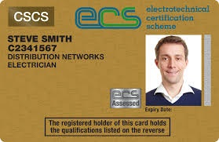

Validate your expertise in UK electrical distribution networks with industry-recognised ECS certification for electrical, utility and construction environments.

Official-style ECS Distribution Networks Electrician Card – recognised credential for electrical distribution network work.
The ECS Distribution Networks Electrician Card provides formal recognition of your competence to work on UK electrical distribution systems. It helps demonstrate that you understand network safety, isolation procedures and the technical requirements of overhead lines, underground cables and substation environments.
This card is typically used by electricians and network operatives working for distribution network operators (DNOs), contractors and utility providers across the UK.
Standard application processing: 15–20 working days
Widely recognised across UK electrical distribution, utilities and construction sectors.
Provides formal recognition of your skills on overhead lines, underground cables and substations.
Shows a clear commitment to safe working practices and network operator requirements.
Supports progression into more senior or specialist roles within electrical distribution networks.
Once we receive your complete application with all required documents, it typically takes around 15–20 working days to process and dispatch your ECS Distribution Networks Electrician Card. Incomplete or incorrect applications may cause delays.
This mandatory assessment checks your understanding of health, safety and environmental responsibilities on UK electrical and construction sites. It normally needs to be passed before a new or renewed ECS Distribution Networks Electrician Card can be issued.
The card can be relevant to work on overhead line systems, underground cable routes, substations and other electrical distribution infrastructure operated by licensed network operators and their contractors in the UK.
You can usually apply to renew your card before its expiry date. Renewal typically involves holding a valid ECS Health, Safety & Environmental Assessment and providing up-to-date evidence of your ongoing distribution networks experience.